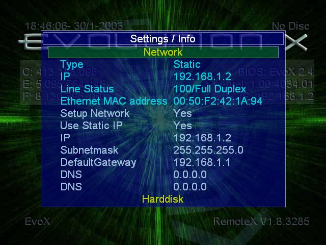

EVOLUTION-X
& SCREEN SHOTS
ROOT
MENU

NETWORK
SETTINGS

TROUBLESHOOTING EVOX
1. Applications do not launch, it freezes at the big <X>
screen. If you installed EvoX from a CD or DVD there is an
issue with the file when it is copied from the DVD directly to the
HDD. What you need to do is, copy the "evoxdash.xbe" to the PCs
hard disk -via- FTP and turn off the READ ONLY attributes. Put it
back on the Xbox HDD and try again. I have had this problem and
doing this has worked. There is a program called
"attributes.xbe" that is supposed to fix this problem, and can be
launched from the DVD EvoX's menu. Once the "evoxdash.xbe"
& files are fixed it should work fine.
2. I.P. Adresses & Routers! It seems some people have
problems with connecting -via- FTP with EvoX. I have had the same
problem when the EvoX INI file has a Static IP address that does not ,
for a lack of a better word, conform with the Router's DHCP
table. Example: I could not connect to an Xbox behind my router
with an IP address of 192.168.1.115, but could connect to the Xbox with
an IP address of 192.158.0.115 though. Why? Who knows, but
my router's IP address is 192.168.0.1 so the routing table is based on
192.168.0.XXX IP addresses. I think the ISSUE is, that if you
have a router, then your Xbox's IP must be within its routing
table.